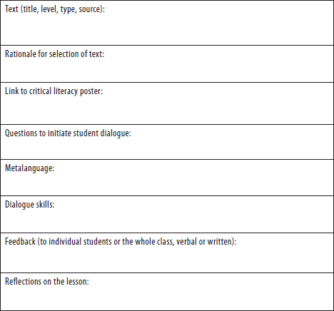
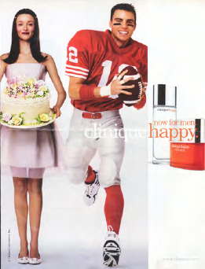
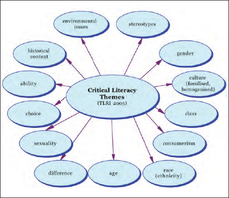
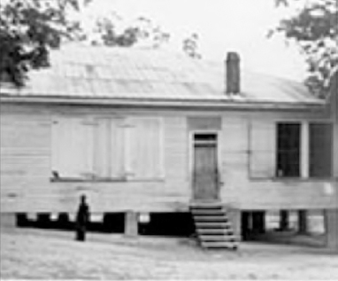
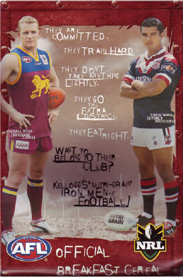
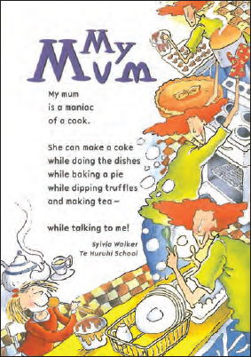
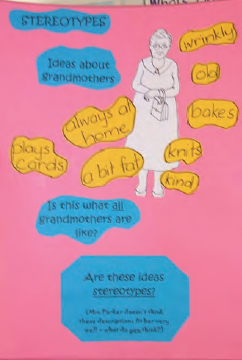
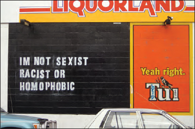

In this chapter we get down to some of the nuts and bolts of developing a critical literacy lesson. In keeping with our discussions of theory and dialogue, I will provide a format and some lesson examples, but this book does not provide lessons or units for you to uplift and implement lock, stock and barrel. Remember: “It is dangerous to generalise any educational approach from one national/regional and cultural context to another” (Luke, 2000, p. 499). Instead, you are encouraged to reflect on the key ideas discussed here and to develop your own lessons using texts and questions that are appropriate for your context and your students, and to achieve your aims.
In the following sections we will look at what the CLRT considers to be the key elements of a critical literacy lesson:
• lesson structure/planning
• text selection/revisiting texts
• questioning
• direct instruction of metalanguage
• the role of the teacher
• the role of the students
• locating critical literacy across the curriculum.
It is important to note that the order of the sections in this chapter does not necessarily reflect the order in which you may go about preparing a critical literacy lesson. In actual fact you may begin with the curriculum area in which you are interested in locating a critical literacy lesson. You might then have some particular concept that you want to introduce to the students, which prompts you to select a particular text, and so on. Conversely, a student may bring in an interesting text that you want to analyse with the class. My point is that there is no one right way to go about preparing for a critical literacy lesson. You will, however, find yourself attending to all of the areas discussed in this chapter by the time you have completed your planning.
This section gives an overview of the planning process by unpacking the generic lesson plan template developed by the CLRT (see Figure 6, and also available at http://plantingseedswithcriticalliteracy.wikispaces.com/). If you choose to follow the template to direct your planning, you will begin by selecting the text you want the students to analyse. As will be discussed in further detail in the upcoming sections on text selection and locating critical literacy across the curriculum, you will have a number of considerations when selecting the text. If it is for a guided reading lesson you will be looking for a text that is appropriate for the student’s reading level. If you are locating it in another curriculum area you will be looking for texts that fit your focus of inquiry or the theme you are studying. If you plan on scaffolding the text for the students, or using it as a shared reading lesson (Ministry of Education, 2003), then the reading level is less of a concern. For example, it is common for students to use Wikipedia entries as sources of information. But the language contained in such these entries may need scaffolding before you can support students to analyse them.
Part of selecting the text is making explicit your rationale for selecting that particular text. Why did you choose that text over another? How does it link to your programme or unit of study? Maybe you wanted the students to analyse a visual text because you have already analysed a number of written texts. By making explicit your rationale you can chart the different texts and opportunities for analysis that you provide your students. An important part of critical literacy practice is acknowledging a broad range of texts from students’ daily lives, so you may wish to include students in the text selection process for some lessons.

FIGURE 6: CRITICAL LITERACY LESSON PLAN TEMPLATE
Once you have selected the text for critical analysis, you can then select an aspect of the poster to focus on. Does the text lend itself to consideration of the role of the author?
• People make choices about who and/or what is included, so
• Some things and/or people may be excluded, and
• Choices are made about how things and/or people are represented.
Or does the text lend itself to consideration of the role of the reader?
• All readers have different knowledge and experiences that they bring to texts.
• Readers will make sense of texts differently.
Every critical literacy lesson ought to conclude with a consideration of the “So what?”:
• What does our analysis mean?
• What have we learned about this text?
• What have we learned about this author?
• What have we learned about how this text shapes our thinking and (potentially) our actions?
The aspect of the poster you select for the lesson focus will in turn help you to select the questions you want to use.
Next you need to plan the questions. As mentioned above, you will want to link the questions to the aspect of the poster (e.g., representation) you are focused on. Let’s take a Clinique advertisement as an example (see Figure 7). If you are interested in the role of the author in constructing and representing gender, you might ask students to consider:
• How are young men constructed in this text?
• How are young women constructed in this text?
• How do these representations shape your thinking about masculinity and femininity?
• How else could an advertisement for Clinique Happy for Men have been constructed?
After you have selected the questions you are going to use to initiate dialogue, you will need to decide which metalanguage terms you wish to explicitly teach or reinforce (see Appendix B for a glossary of possible terms). Your choice of metalanguage will naturally follow on from the questions you have selected and the aspect of the poster you are focusing on. For the Clinique advertisement, the metalanguage terms you select might include representation, construction and stereotype.

FIGURE 7: CLINIQUE ADVERTISEMENT
The next step in developing your lesson structure or your lesson plan is selecting the dialogue skills you wish to explicitly teach or reinforce during the lesson. From Chapter Three you may wish to teach your students to use uptakes, where they acknowledge the contribution of another student and add to it. For example, “I like what Mere said about pollution. I think that we need to be more careful about our carbon footprint.” Or, “I disagree with Kevin. I think that that the character of Tom Robinson in To Kill a Mockingbird is not a stereotype because he shows compassion for Mayella.” Other dialogue skills you may wish to incorporate include:
• turn taking (or don’t interrupt)
• supporting your opinion
• attentive listening
• critiquing the idea, not the person (Mercer & Littleton, 2007).
While this is not meant to be a “formula”, nonetheless the teacher’s role is pivotal in supporting and maintaining student dialogue.
During, or after, the lesson you will give feedback to the students on how they are going with the focus of the lesson (the role of assessment is discussed in more depth in Chapter Five). Are the students having difficulty identifying multiple readings, for example? Your feedback will shape your reflections (below) and the next lesson.
Finally, after you have finished the lesson you will want to reflect on the whole lesson (including the quality of the dialogue):
• How did it go?
• What was the impact of your role on the development and quality of dialogue?
• What worked?
• What didn’t?
• Which students were engaged?
• Which students didn’t participate?
• What will you do differently next time?
In this section we have examined all the elements listed on the lesson plan template. You are encouraged to draft a lesson plan and run it past a colleague. You are also encouraged to tweak the template as needed to suit your context. Feel free to share your experiences and questions with us on the wiki:
http://plantingseedswithcriticalliteracy.wikispaces.com/
REFLECTIVE INTERLUDE
• What questions remain about lesson structure/planning?
• Which colleagues can you count on for support?
In the critical literacy literature, and here in Planting Seeds, a text is conceptualised quite broadly (e.g. Stevens & Bean, 2007). Texts can be written, verbal, digital, visual, live or moving. If we view a text as “a vehicle through which individuals communicate with one another, using the codes and conventions of society” (Robinson & Robinson, 2003, p. 3), then we can read almost anything as a text, including the traditional print texts in the classroom, cultural texts such as a marae,12 multimodal texts such as websites, moving texts such as movies, or live, embodied texts such as fashion style or body language. Of course the texts you select will depend on the curriculum area you are focused on. By conceptualising what counts as a text quite broadly, we can greatly extend where we locate critical literacy lessons in the curriculum.13
Many of the teachers found text selection for critical literacy lessons quite challenging. Initially, we found ourselves looking for themes, or texts, that were overtly sexist, racist and so on (see Figure 8). Our thinking was that these themes would provide an obvious entry for the teachers to direct questioning that would consider issues of representation, inclusion, exclusion, and so on. However, the reality is that publishing standards have changed dramatically over the years and most teachers will be hard pressed to find a range of texts that support students to draw on these discourses in explicit ways. I have included the themes here, as some teachers may find the themes listed a useful starting place when selecting texts for lessons with a critical literacy focus. However, in no way is one limited to using these themes.
After we solidified our understanding of critical literacy and developed the student poster, these themes became less important in text selection and the teachers found that they could use a broader range of texts for the lessons. As discussed during one of the research team working days:

FIGURE 8: THEMES FOR TEXT SELECTION
Researcher: |
One final question for you: do you think having the definition [of critical literacy] has now broadened the texts that you can use to do that work, that it’s made more texts [suitable]? |
Teacher: |
Well I think you can use that definition with any text now… Well that was what I, I … I was feeling like … I was beating my head against a brick wall trying to go and find a book that has [critical literacy themes] in [it] and so on but I think that definition gives you the [focus needed]. (RTWD, 14/10/05, p. 13) |
In other words, we found that once we began to use the poster to focus instruction, we could use any text for a critical literacy lesson. For example, some might consider the back of a box of ibuprofen a neutral text. However, we can take a critical literacy lens to this text, just like we can to any text.
We can ask questions such as:14
• What knowledge does the reader need to have in order to understand this text?
• What different readings of the text are possible?
• What is the intended reading of the text? How do you know?
• Which readers might be excluded from this text? Why?
During the course of the project the variety of texts the teachers were willing to interrogate increased. They came up with a range of ideas to use different texts and use texts differently. These included the use of lower-level texts for students, so that they could engage on a critical level without the possible burden of a difficult text. For example, Year 8 children explored gender and family stereotypes in a junior reader (Chifney, 2005). Because the reading level was not challenging, they were “freed up” to engage in analysis of the text.
In the Critical Literacy Research Project, particularly in the guided reading lessons, the teachers revisited texts. This involved making use of a text the students had already read, but this time for a different purpose. In guided reading lessons it is common practice for teachers to use a new text each time they teach a guided reading lesson with students. It is not, however, a prescribed practice: “Guided reading therefore gives learners the essential, confidence-building experience of overcoming challenges in text that they are seeing (usually) for the first time” (Thompson, 2002, p. 5, emphasis added). Nonetheless, it is such a common practice that students and parents may comment to the teacher when texts are revisited.
As the project progressed, the research team found that the most effective way to locate the critical literacy questions in a guided reading was on the second reading of any given text. So the teachers would do what we called a “traditional” guided reading lesson (Thompson, 2002, 2005) with students on a text. Then the next time they met with that group they would quickly review the text and then go into the critical literacy questions and discussion. While this represents only a small shift in the structure of guided reading lessons, it was nevertheless commented on by some students: “Miss, are we actually going to read a book or not?” (GRL, Year 3, 15/6/05, p. 12). This question, “Are we going to read a book?” was repeated by the same student four times during the course of that particular lesson. The student’s comment may reflect an expectation that guided reading lessons are about decoding a new text each time the group meets rather than engaging in critical dialogue.
Another idea was text juxtaposition. Teachers highlighted the usefulness of juxtaposing different texts on the same topic so that differences could be noticed and explored. For example, one teacher had the students analyse the websites of Greenpeace15 and the Japan Whaling Association.16 In particular, the students focused on representation and inclusion: “How is whaling represented in the text?” and “What things are missing from the text?”
In an example from a secondary classroom (Year 12), the teacher and students explored the history of segregation in the southern United States to support the study of To Kill a Mockingbird (Lee, 1960) through the juxtaposition of photographs from the period representing African American and White schools (Lesson, 3/4/07). Figures 10 and 11 represent schools from the 1920s to the 1930s in the same area of Halifax County, Virginia. This lesson was focused on building students’ knowledge of the history of the time in which To Kill a Mockingbird was set. By juxtaposing visual, historical texts the students were able to consider ways in which the author was influenced by the particular historical context of the segregated southern United States. Knowledge of issues such as Jim Crow laws, slavery and segregated schools then supported students’ multiple readings of To Kill a Mockingbird.

FIGURE 10: AFRICAN-AMERICAN SCHOOL IN HALIFAX COUNTY
Source; http://www.vahistorical.org/civilrights/15.htm
FIGURE 11: WHITE SCHOOL IN HALIFAX COUNTY
Source: http://www.vahistorical.org/civilrights/17.htm
Teachers also used what we called community texts. Community texts are those found all around us, such as billboards, flyers or junk mail, cereal boxes and so on. Figure 12 is a Nutri-grain box that I often use in critical literacy workshops. On the front of the box there is a symbol that says “Iron Man Food” and the box is made to look like an iron box, complete with rivets. I am originally from California and I am not very familiar with rugby or its variant, rugby league. So in workshops I am able to illustrate questions such as “What knowledge does the reader need to bring to this text in order to understand it?,” often to the amusement of those in attendance. Other questions that are useful for this particular text are, “How are men constructed in this text?,” “What view of the world is the text presenting?” and “How else could the text have been written?”17

As the project progressed, teachers found they were using a wide range of texts at varying levels. Texts included movies such as Happy Feet (Miller, 2006), novels such as Number the Stars (Lowry, 1989), video clips from YouTube, advertising, and so on. A number of the teachers used digital texts and increased their use of multimedia texts, including blogs, wikis and so on. Students also noted that with variation in texts came opportunities for the teachers to select texts that were relevant to them: “Quite a lot of the things that [the teacher has] made us look at concern us, which kind of makes us more interested in it” (SRI, 20/9/07, p. 2).
REFLECTIVE INTERLUDE
• Which texts might you use? Why?
• Which types of texts (oral, written, visual, digital) might you use? Why?
• Which familiar texts might you revisit with a critical literacy lens? Why?
• How will you ensure you support students to critically analyse a range of texts?
As discussed in Chapter Three, questioning and the dialogue that follows it constitute the key pedagogical tools for critical literacy instruction.18 The critical literacy literature frequently discusses questioning and the kinds of questions asked (e.g. Brown, 1997; Knobel & Healy, 1998; McLaughlin & DeVoogd, 2004b). The key difference between the sorts of questions teachers frequently ask of students about texts and critical literacy questions is the focus on power and the power of texts to shape our thinking and our actions.19 Let’s take a short text as an example. Figure 13 shows the poem “My mum” (Walker, 1998), written by a primary school student and published in the School Journal.
Both a reading comprehension lesson and a critical literacy lesson might feature reading and re-reading of the text, followed by a question-and-answer session, and conclude with having students write their own poems about their own mothers. The difference lies in what I like to call the “take home” messages of the lesson. (See Table 3 to compare and contrast the kinds of questions asked in a comprehension lesson and a critical literacy lesson). In the reading comprehension lesson there is a face-value discussion about the mum portrayed in the poem (who, what, how, why). There is no consideration of the mums who are not represented in the text and how that might exclude some readers. In contrast, a critical literacy lesson explicitly addresses issues of representation and exclusion. It focuses on the power of publishing a poem about a mum who is a good cook and what that might mean for readers whose mums are not interested in or don’t have much time for cooking. The critical literacy lesson moves the students beyond considerations of author viewpoint to consider the power of texts to shape how we think, feel and act, and the power to provide us with agency in our relation to the text.

TABLE 3: COMPREHENSION VERSUS CRITICAL LITERACY QUESTIONS
Comprehension questions |
Critical literacy questions |
Who is this poem about? How do you know? |
How are mums constructed in this text? |
What does mum do? |
Who is excluded from this text? Why? |
Why does it matter? (So what?) |
In an example from the critical literacy research, the students read the poem “Uncle Andy’s singlet” (Cowley, 2003) (see Figure 14). The teacher wanted to draw attention to the ways in which both the written and visual texts were constructed (Anstey & Bull, 2000). The students read only the text of the poem, with the illustrations omitted, in the first instance, and then compared the text with the illustrator’s representations of Uncle Andy. To prompt the discussion the teacher asked the students to consider: “Why do you think the illustrator chose to make Uncle Andy fat and always smiling?” (GRL, Year 6, 21/6/05, p. 7). This question directed the students to consider issues of representation, or the ways in which the illustrator and the author had constructed the character of Uncle Andy in the written and visual texts.
This example illustrates how texts are not neutral and can position people in stereotypical ways. It also illustrates how the written text and the visual text can draw on different discourses. There are, of course, other critical literacy questions that teachers could use to prompt critical analysis of the text. For instance:
• Are the written and visual texts fair? Why or why not?
• What is missing from the text?
• What could have been included in the text but wasn’t?
• How else could this text have been illustrated and still made sense in relation to the poem?
In another lesson from the Critical Literacy Research Project, the teacher and the students compared and contrasted the representations of elderly people in “Looking after grandpa” (Brooker, 1995), “The ultra-mega-awesome surprise” (Bartlett, 1996) and “Zoe visits Yiayia” (Viatos, 1997). She asked the students, “What does this writer suggest about grandpa and old age?” and “Is this always what being old is like?” The students were able to contrast the representations in the stories with the elderly people they knew. The teacher summarised the lesson:
So we’ve been, we’ve had three days of reading three different journals where in each of the journals the people have been sick, and old, and tired. But we’ve just shared that this, this doesn’t have to be. So we’ve got here … old people who forget things [in these stories]… but we know that this doesn’t have to be [what being old is] about. (GRL, Year 3/4, 15/9/05, p. 5)
The teacher invited the researchers who were observing the lesson to comment to the group at the conclusion of the lesson, and one of the researchers added
That links to [the lesson] because what you’ve seen of course is that you all [students] know things about old people that the authors haven’t chosen to put in their stories. (GRL, Year 3/4, 15/9/05, p. 5)
Thus the researcher took the opportunity to remind the students that they had knowledge and experiences that enabled them to make sense of the story differently and challenge the construction of grandparents in the text. Again, the questions selected encouraged the students to think critically about the texts and the ways in which certain groups of people were being represented.
In Chapter Three we looked at “authentic” questions. You may remember that authentic questions are questions that do not have a pre-specified correct answer. Depending on the purpose of your questioning, you may wish to ask at least one authentic question for any given text. Authentic questions are particularly useful for eliciting multiple readings and encouraging students to bring their own knowledge and experiences to the text.
We recommend that you select two to three questions to elicit student discussion on any one particular text, but be prepared to use fewer depending on how the discussion develops. By keeping “less is more” in mind, teachers may be able to allow for greater depth of discussion and create spaces for the discussion to flow in flexible ways. The questions are typically related to an aspect of the poster (see Figure 4) the teacher wishes to explore in the text. A particularly useful source for thinking about the kinds of questions that are asked in critical literacy lessons comes from the website on critical literacy produced by the Department of Education in Tasmania (2009). Generic questions are grouped into themes such as “Gaps and silences” and “Construction of characters” that can be modified to suit most texts. The CLRT found they could adapt those questions to suit most age levels and texts.
You will remember our discussion about wait time from Chapter Three. Don’t forget to allow students time to think and respond. Try to avoid conversational CPR (Palmer, 1998) at all costs. When I am lecturing I often take a sip of water from my water bottle to purposefully slow myself down and give the students time to think. You may want to count to yourself or find other tricks to help yourself wait 3 to 5 seconds (Tobin, 1987).
Another questioning strategy you may wish to try is to allow the students to select or construct the questions. We made the questions from the Department of Education in Tasmania (2009) into playing cards by photocopying the template20 onto different coloured cards and laminating them. Different groups of questions such as textual purpose or construction of characters had their own colour. We would then put the cards on the table and encourage the students to select a question that was a good fit for that text. Rather than answering the question, the student had to explain why he or she had selected that particular question and why it was a good fit for the text under discussion.21
Finally, with regard to questioning, the CLRT advocates for neutral responses to student answers to the questions when the teacher wishes to signal to the students that s/he is seeking multiple readings or interpretations, and that there is no one right answer. After watching her videotaped guided reading lesson during a research team working day, one of the teachers explained that she wanted to be as neutral as possible when responding to students’ comments. She made this explicit to the students in the reading group at the onset of the lesson by telling them that she would only respond with “Thank you” or “OK” because she was interested in hearing many different answers. During the working day the teachers commented:
Teacher A: |
Just the thinking about the teachers and the point of view you are taking as the teacher, are you leading or are you leaving it open … |
Teacher B: |
And also the fact that your responses, you know, when you respond so pleased or something the children take on board, it’s implicit, and you say that is the track that you want them to go down… |
Teacher A: |
Leading leading… [towards a right answer] |
Teacher D: |
You were very lovely and neutral, instead you didn’t affirm anybody sort of over the top you know… |
(RTWD, 4/5/06, p. 30) |
|
This excerpt illustrates the CLRT’s heightened awareness that the teacher can be very powerful in directing student discussion towards the “right” answer. Yet during a lesson where the teacher is interested in soliciting as many divergent readings as possible, the power of positive reinforcement can lead some children to be cautious in responding for fear of getting it wrong. Of course a balance is needed, because you will also want to include probing and challenging questions in response at times when you want to draw more thinking out of a student. There is a danger that neutral responses can lead to a lack of depth in student answers.
This doesn’t mean that you can’t answer the questions you pose to the students. Depending on the aim of the lesson and the particular text used, the teacher may wish to take a stand or highlight a particular reading. On more than one occasion the research team has noted that the students “don’t know what they don’t know”. Then the role of the teacher is to make explicit a reading the students have not identified to expand their awareness of multiple readings. This might occur at the end of the lesson, when the teacher shares his/her reading to supplement the readings identified by the students. However, as we saw in Chapter Three, you have to be careful that students don’t view your reading as the “correct” reading.
REFLECTIVE INTERLUDE
• Which kinds of questions will you pose? Why?
• How will you ensure you ask a range of questions?
During the project the CLRT came to the realisation that direct modelling and teaching of some of the metalanguage, or particular critical literacy language and terms to talk about the language under analysis, was vitally important as it became clear that the students were not picking up on it through the critical literacy lessons. As noted by one of the teachers during a research team working day, “We’ve done it the other way around with the kids and it doesn’t seem to be working” (RTWD, 5/8/05, p. 23). This is in reference to our earlier attempts to subtly question the students in an attempt to elicit issues of representation or stereotyping that could be identified from some readings of some of the texts. At the beginning of this working day a teacher described her frustration and concern after completing a critical literacy lesson using community texts:22
Well I will [come out] and say I don’t think it’s going very well for me. I’m really, I’ve got some quite significant concerns … I did a whole class thing with small community texts last week … and I mean the kids had a lot of fun with it, they looked at all the flyers … they just sat there enjoying looking at ads and toys and things and we did all the discussion, but overall the impression I got was of, well, you know, if this is consumerism bring it on, you know [laughter, all talking]. And I just I don’t know how to tap into the resources to get the kids to really start thinking in that critical literacy way. I just feel like I don’t know where to go. (RTWD, 5/8/05, p. 1)
Without the language associated with the practices of a text analyst, the teacher found it difficult to support the students to go beyond the surface features of the texts. With reflection and discussion the research team came to the understanding that we needed to do some direct, explicit acts of teaching of some of the language that students would need in order to be able to discuss and understand some of the critical literacy concepts.
The poster (Figure 4) forms the focus for any given lesson.23 Depending on the focus of the lesson, the teacher will need to explicitly teach terms such as bias, stereotype, inclusion, exclusion, representation, and so on.24 For example, in a lesson with Year 5/6 students (ages 9–10), the teacher and the students conducted a text-sleuthing project. They read through School Journals25 from the 1960s and early 1970s to conduct an analysis of representation of Māori. In the lesson where they presented their findings, the teacher linked to the points of the poster: “Some things and/or people may be excluded” and “Choices are made about how things and/or people are represented”. In order to explore these teaching points, the teacher did some explicit teaching on the term stereotype:
Teacher: |
OK we talked briefly about stereotyping. Can any of you remember and tell us sort of what we mean by that? I used the example of what a teacher is like didn’t I? |
Student: |
Yeah. |
Teacher: |
What would a stereotype of a teacher perhaps be? |
Student: |
Um grumpy. |
Teacher: |
I’d be very careful what you say. Yes grumpy will do. |
Student: |
Old? |
Student: |
Carried a big stick. |
Teacher: |
Isn’t it interesting because we haven’t been allowed to beat children for about 20 years, and yet that’s still part of the stereotype of what a teacher might be like isn’t it? OK do you detect any stereotyping in any of what you have read in these stories and articles? |
(GRL, Year 5/6, 15/9/05, p. 5) |
|
Not all of the students may have been familiar with the term stereotype, but when invited to share teacher stereotypes they were quickly able to provide some. Once students are familiar with some of the metalanguage of critical literacy, they can then discuss the “So what?” of the poster. In the next excerpt the student was able to discuss what the effects of stereotypical representations of Māori in the School Journals might be:
Teacher: |
OK we talked briefly about stereotyping. Can any of you remember and tell us sort of what we mean by that because it’s a really hard concept? |
Student: |
Um, it means like if um some Māori representations [are] like lazy, just lying in the sun and all that um it could give other, give impressions that all Māori are like that. |
(GRL, Year 5/6, 15/9/05, p. 5) |
|
Although the poster itself does not contain a great deal of metalanguage, we found that in order to unpack the points on the poster, teachers needed to introduce and explicitly teach metalanguage. Some teachers started a word bank on a wall in the classroom, which they and the students added to as they increased their metalanguage.
In another example, the teacher conducted a separate lesson on the term stereotype. She initiated a discussion about grandmothers and had the students brainstorm ideas associated with grandmothers (see Figure 15). She then challenged them to consider whether or not these ideas applied to all grandmothers. The students were then encouraged to draw on their own knowledge and experiences to challenge the representation of grandmothers as captured in their brainstorming. They concluded that the ideas and images they had come up with were stereotypes because they did not apply to all grandmothers. In a subsequent lesson the teacher was able to refer to the stereotypes poster they had made to initiate a critical literacy lesson, where the students interrogated a text that drew on the stereotypical discourse of nerds. Thus they had the necessary metalanguage to critically analyse the stereotypical representations of nerds they had found in the text.

Photo Rae Parker.
Teachers from the secondary setting found that providing students with a copy of the poster for their folders, followed by explicit instruction in the metalanguage of critical literacy, enabled the students to more easily develop a greater understanding of critical literacy. These terms were expanded on in subsequent lessons. Further, students benefited from guidance to increase their understanding and use of metalanguage. Frequently this might involve the teacher unpacking the poster, and the metalanguage associated with critical literacy would be discussed.
We found as we increased our direct teaching of the metalanguage associated with critical literacy that the students were able to demonstrate their growing understanding of the practices of critical literacy. For example, we found in the following SRI:
Researcher: |
So what do you think were the key points in [teacher’s] lesson today? |
Student: |
Look at the composer. |
Researcher: |
Who is the composer? |
Student: |
The person who created it. |
(SRI, Year 9, 21/5/07, p. 1) |
|
In the SRIs the researchers asked the students to explain what a text is. Over the course of the project the understanding of metalanguage increased as teachers placed greater emphasis on it. For example, before we placed much emphasis on direct teaching of metalanguage, student responses to the question “What is a text?” were typically along the lines of:
Student: |
It’s a … like a paragraph or piece of writing … |
Student: |
It’s something people have said. |
(SRI, Year 6/7, 30/3/07, p. 4) |
|
As the teachers increased their focus on metalanguage, students were able to respond more broadly to this question:
Researcher: What is a text? |
Student 1: A way of communicating. |
Student 2: Communicating ideas to other people. |
(SRI, Year 10, 5/3/07, p. 3) |
We can compare the direct teaching of the metalanguage associated with critical literacy to research into reading comprehension that urges direct teaching of comprehension strategies (Duke & Pearson, 2002; Pardo, 2004; Pressley & Block, 2002). We would not expect students to develop the language to talk about reading comprehension or critical literacy without some direct instruction. Barbara Comber (2001b) also recommends the direct teaching of the metalanguage associated with critical literacy:
The task for teachers is to help children to develop a meta-awareness and a metalanguage for what they can already do and to assist them in applying these resources to the texts and situations of school life. (p. 171)
In other words, students need to be supported to develop a language that allows them to talk about the power of texts.
REFLECTIVE INTERLUDE
• Which metalinguistic term will you teach first? Why?
According to the CLRT, the role of the teacher is essential in supporting students to become text analysts. The role of the critical literacy teacher, in our view, includes—but is not limited to—the following five responsibilities. First, teachers are responsible for setting up and maintaining a caring and supportive environment where students respect each other’s responses and experiences. We have discussed ways this can be accomplished through dialogue in Chapter Three, and earlier in this chapter in the section on questioning. Second, teachers are also responsible for supporting students to make connections between texts and their lived experiences, which may in turn support them to develop a greater empathy for others. For instance, one student explained that after conducting a text-sleuthing exercise, in which he and the other students analysed the representation of Māori in School Journals, critical literacy
means you get to think, like [if] I had a friend that was Māori and if I showed him the book … you might think about it to … to make sure he wouldn’t be offended by it. You’d not show a book to him that he would be totally offended by and [if you did] he wouldn’t like you much any more. (SRI, 19/10/05, p. 11)
By considering multiple readings of texts, students may be encouraged to consider what it feels like to stand in someone else’s shoes.
Third, teachers are also responsible for modelling a questioning stance towards texts. Teachers may find that they can become more confident and comfortable with this role if they practise it with a colleague or group of colleagues. We found that the research provided the participating teachers with multiple opportunities to engage with a wide range of texts. We often discussed texts such as Figure 16 in our meetings. Figure 16 is a Tui billboard that was “tagged” or overwritten by someone talking back to the genre of the Tui “Yeah right” advertising campaign, which reflects popular culture and current topics in New Zealand. Some consider the topics of the billboards to be in poor taste. These discussions may at first have seemed off task, but they allowed us to practise our own developing critical literacy skills on a variety of texts.
As we became more comfortable with critically analysing what we referred to as “adult-level” texts, such as billboards, newspaper articles or current events, we became more confident with supporting students to do the same. One teacher explained in an exit interview:
I feel that with my increased awareness of critical literacy it’s become an integral part of who I am and I hope that will reflect in how I approach my teaching next year, and as opportunities arise they will become an integral part of my programme. (EI, 26/11/07, p. 1)
Fourth, teachers are responsible for assisting students to consider multiple interpretations and readings of texts, rather than to search for the one “right” reading. And fifth, teachers are responsible for co-constructing understanding with students by supporting students to develop a metalanguage of critical literacy, or a language with which to talk about critical literacy.

FIGURE 16: TAGGED TUI BILLBOARD
Photo by author.
Some critical literacy proponents may find the description of responsibilities for the role of the critical literacy teacher to be too sanitised or apolitical. What do I mean by this? Carole Edelsky and Meredith Cherland (2006), for instance, believe that the term critical literacy should apply to “teaching with conscious radical intent” (p. 17). Does this mean that only those willing to protest in the streets need apply? I think not. I believe that there is room within critical literacy pedagogy for a variety of ways of analysing texts and a variety of ways to support students to do so.26
Nonetheless, by making what a critical literacy teacher does in the classroom explicit, we run the risk of creating Wendy Morgan’s (1997) “nightmare … [where] a critical literacy as educational orthodoxy might become a constraining and containing list of ideal or typical ‘skills’ or ‘behaviours’” (p. 166). So what is an author to do? Well, in Planting Seeds I have presented readers with different theories and practices of critical literacy, sprinkled with a variety of examples and cautions. It will be up to you to select, adapt and redesign as needed to fit your particular context.
Although encouraging you to develop a version of critical literacy appropriate to your context is well and good, it doesn’t address the criticism from Edelsky and Cherland (2006) regarding the politically charged nature of “real” critical literacy. It might be useful here to remember that “education is a political act” (Freire, 1998, p. 63). What do I, and many others in the field of education, mean by this? There are a number of different definitions of political, but the one most relevant here is “concerned with power”. You will remember from Chapter Two that in Planting Seeds we think of power as circulating in a network of relations. That means instead of conceptualising power as something some people have and others do not, we can think of power as an ebb and flow, like the tide. In a particular moment you may be positioned as having more power than someone else, but that moment is transitory.
Returning to Freire’s point that education is a political act, we are viewing education as being concerned with power. Historically education has always been concerned with power. We can think about the history of schooling and education through a critical literacy lens:
• Who has been able to attend school (Pākehā, Māori, boys, girls, disabled children)?
• Which curriculum (academic or other) has been offered to which groups?
• Who gets to decide the curriculum?
• Who sets the assessment agenda?
So what does this mean in terms of the role of the teacher in critical literacy education? Well, if you acknowledge that education is a political endeavour then you may agree that you need to be able to articulate your own values and beliefs, or personal philosophy, of teaching (Smyth, 1992). This allows you to make explicit any particular political, or other, agenda. Once you have made what you think is important explicit, you can reflect on your teaching practice and see if your beliefs and practices align. This reflective exercise is useful as a means to negotiate the “discourses of pedagogy as authoritative or facilitative, transmissive or negotiated” (Morgan, 1997, p. 104). That is, according to your own philosophy of teaching, when are you a facilitator and when are you the source of all knowledge? Do you negotiate learning with students or do you transmit information? As we noted in Chapter Three, “teacher-learner interaction is inherently and generically an unequal encounter” (Wallace, 1992, p. 214). However, we can reposition our students and ourselves in particular moments during a lesson such that we are the facilitators or the learners. As such, you don’t have to choose one discourse over another all the time. Instead, you can adopt either discourse as appropriate to accomplish your aims.
So what is your role? Where do you stand? How overtly political do you wish to be? That is for you to decide.
REFLECTIVE INTERLUDE
• What do you see as your role as a critical literacy teacher?
The discussion on teaching-learning relationships would not be complete if we didn’t consider the role of the student in critical literacy. According to the CLRT, students are responsible for contributing to dialogue, with the understanding that ideas are under consideration but that critical literacy is not about criticising the people who offer up those ideas for consideration. This responsibility holds true whether the teacher is facilitating the dialogue or other students. In this section we will look at two co-operative learning strategies that can be applied to critical literacy lessons.
Literature circles, also known as literature study groups or book clubs, are small, student-led conversation groups. Literature circles have been around since the early 1980s in the United States. Students are responsible for their learning in literature circles, where they independently read texts that are self-selected or selected by the teacher and then prepare for discussion and dialogue with each other. The role of the teacher becomes that of “knowledgeable reader and mentor of learners” (Samway & Whang, 1996, p. 15) rather than the sage on stage or expert. Literature circles use open-ended questions that enhance comprehension and critical thinking. Research shows that literature circles have a number of benefits, including enhancing students’ engagement with texts and improving their motivation, reading comprehension and attitude towards reading (Auger, 2003; Daniels, 2006). Literature circles are not about searching for the “right” answer, but rather provide students and teachers with a vehicle “to think critically about literature, express their ideas in oral and written forms, and better enjoy their literacy experiences” (Lin, 2004, p. 23).
Effective literature circles are grounded in the principles of co-operative learning. They “are essentially well-structured collaborative learning applied to reading” (Daniels, 2006, p. 13). Thus, just as with co-operative learning, it is imperative that social and discussion skills are explicitly modelled, taught and evaluated:
peer-led reading groups … require constant coaching and training by a very active teacher who uses mini-lessons and debriefings to help kids hone skills like active listening, asking follow-up questions, disagreeing agreeably, dealing with ‘slackers,’ and more. (Daniels, 2006, p. 13)
Students will need multiple opportunities to practise the skills needed to run a literature circle as they become more adept at them.
The basic structure of a literature circle is as follows.
1. Read. Students independently read the text, or selections from the text, selected for study. This can be a fiction or non-fiction text.
2. Prepare. A very important element of a successful literature circle is student preparation for the dialogue. Students may have assigned roles, summarise key events, make predictions or prepare responses to questions. Some teachers use reading response logs, sticky notes or bookmarks as preparation for the dialogue.
3. Dialogue. The dialogue can be oral or written. Written dialogue can take place in dialogue journals, passing notes back and forth, writing letters and so on. Teachers may wish to experiment with the traditional oral dialogue as well as written dialogue.
Students can be assigned to their literature circle by the teacher or form their own. It has been suggested that four to eight students is the optimal number (Brabham & Villaume, 2000). The size of the groups needs to allow all its members multiple opportunities to respond to the questions and, if well directed, engage respectfully and thoughtfully with each other’s responses.
Literature circles are a useful strategy to complement a critical literacy approach to texts:
[I]n literature circles students have opportunities to create connections between texts and personal experiences, to listen to various interpretations presented by others, as well as to monitor and take ownership of their own learning through discussion and sharing with each other, thereby deepening their understanding and highlighting their enjoyment of the texts. (Lin, 2004, p. 24).
In addition, researchers and teachers have found that literature circles support students to critically analyse stereotypes and other social justice issues (Lin, 2004; Noll, 1994). The use of literature circles with a critical literacy approach to texts can support students to cultivate a “social imagination” (Rosenblatt, 1970, p. 187), such that students learn to put themselves in the shoes of others to develop greater empathy and to consider ways that texts might foster greater social justice. In an “ideal” literature circle:
students would interpret from more than one perspective and point of view; would be purposeful and reflective; and would question one another, change their minds, and push one another’s thinking as they discussed actions that could be taken in relation to the issues at hand. (Long & Gove, 2003/2004, p. 354)
In this way, the use of literature circles may support teachers to implement critical literacy in their classroom programme and create spaces for more student-directed learning.27
Another co-operative learning strategy that critical literacy teachers may wish to implement is reciprocal teaching. Reciprocal teaching is largely focused on supporting students to make use of the comprehension strategies of predicting, clarifying, generating questions and summarising (Palinscar & Brown, 1984; Pilonieta & Medina, 2009; Rosenshine & Meister, 1994). The two key features of reciprocal teaching are (1) the direct instruction and subsequent practice of the four comprehension strategies, and (2) the use of dialogue as a way to learn and practise the strategies (Rosenshine & Meister, 1994). Some educators have used reciprocal teaching to support students to use critical literacy independently in dialogue with their fellow students (Nussbaum, 2002).
In its initial stages reciprocal teaching does not resemble co-operative learning. Reciprocal teaching begins with the teacher modelling the elements of the comprehension strategies. Then, as the student become more confident and skilled at them, the teacher gradually decreases his/her direct involvement and the students take a more independent role (Pilonieta & Medina, 2009). In terms of critical literacy, a teacher implementing reciprocal teaching would place a greater emphasis on the different kinds of critical questions that can be asked of texts (see Appendix A for some possible questions). Moje (2007) argues that reciprocal teaching creates spaces for students to generate questions on aspects of the text that interest them, thus allowing for greater links between student knowledge and experience, and the text under analysis. In its final form, reciprocal teaching is a co-operative venture:
one student asks questions, another answers, and a third comments on the answer; one student summarizes and another comments on or helps to improve the summary; one student identifies a difficult word and the other students help to infer the meaning and give reasons for the inferences they made. (Rosenshine & Meister, 1994, p. 481)
Thus reciprocal teaching strategies can support critical literacy as these strategies make use of dialogue to support students’ independent, critical analysis of texts.
The basic structure of reciprocal teaching is as follows.
1. The teacher works with a small group of students. The teacher and students read an excerpt from the text and the teacher models how to ask (in this case) critical questions of the text, how to clarify portions of the text that are unclear, how to predict what may come next in the text, and how to summarise what has been read.
2. The students take turns practising these roles with teacher support. As the students become more skilled, the teacher increases his/her expectations and scaffolds the students in more sophisticated responses.
3. As the teacher becomes more confident in the students’ growing independence, the teacher “act[s] less as a model and more like a sympathetic coach” (Palinscar & Brown, 1984, p. 169). Then the teacher monitors and provides occasional coaching as needed, with the students largely in charge of the reciprocal teaching process.
Of course these are not the only co-operative structures that teachers can use to implement critical literacy in their classroom programmes. Teachers may wish to use other structures, such as pair share or four corners (Wink, 2000). And, of course, you can develop your own structures to suit your students and context (Cohen, 1986). Next we consider where you might implement critical literacy in the (already) crowded curriculum.
The CLRT found they could locate critical literacy in any curriculum area. They began by locating it in guided reading and shared reading. They then located critical literacy lessons in social studies. After the realisation that the definition and poster supported critical analysis of any text, the teachers expanded the range and type of texts for analysis. In this section we look at shared reading, guided reading and examples from other curriculum areas.
Don Holdaway (1979) developed shared reading in New Zealand as a way to emulate the practice of reading bedtime stories (Parkes, 2000). At first glance, shared reading may appear to be simply a case of the teacher reading out loud to students. In fact it is a rich opportunity for teachers to model the power and pleasure of reading; discuss how texts work; teach specific skills, strategies and vocabulary; expose students to a wider range of texts than they may be able to read independently; and, most importantly for critical literacy pedagogy, support students to critically analyse the text (Ministry of Education, 2003).
A shared reading lesson typically involves (Ministry of Education, 2003):
• selecting a text for a particular teaching focus—texts can include fiction, nonfiction, magazine articles, poems, songs, newspaper articles and so on that have been enlarged to enable all the students to see and follow along
• introducing the text by drawing the students’ attention to particular features of the text (such as the title), explaining the rationale for the selection of the text, and supporting the students to make connections between the text and their own experiences
• reading the text—teachers may wish to encourage students to join in or make predictions
• rereading/revisiting the text—in subsequent readings of the text the teacher may wish to draw the students’ attention to deep or surface features or the ways the written and visual texts work together; during the rereading/revisiting of the text the teacher can support the students to act as text analysts through the use of critical questions.
Although shared reading is frequently constructed as an activity where the teacher models the reading of a text that would be too difficult for many of the students, shared reading can also be implemented with a wider variety of texts that students may or may not find challenging, such as advertisements (Wooldridge, 2001) or community texts (Luke, O’Brien, & Comber, 2001). Teachers in the research project found shared reading a powerful opportunity to introduce critical literacy and the metalanguage of critical literacy, as well as scaffold students into becoming comfortable with the sorts of questions asked in critical literacy lessons (Sandretto, et al., 2006).
Myrtle Simpson and Ruth Trevor developed the guided reading instructional strategy in New Zealand in the early 1960s (Simpson, 1962; Thompson, 2005). Guided reading lessons, as many readers will be aware, use small group instruction in which the teacher selects a text at the appropriate instruction level for the students and supports the students with guided questioning and teaching of comprehension strategies (Ministry of Education, 2003). A typical guided reading lesson features the following structure.
Before the lesson the teacher has:
• grouped the students according to data the teacher has gathered on their reading needs and strengths
• selected an appropriate text
• planned the lesson, including the questions.
During the lesson the teacher:
• introduces the text and the purpose for reading
• elicits student understanding and experience to make links to the text
• monitors the students’ reading of the text
• teaches comprehension strategies
• generates discussion.
After the lesson the teacher:
• reflects on the lesson
• records student progress
• plans for future lessons (Ministry of Education, 2003; Thompson, 2005).
In the initial stages of the research project the teachers located critical literacy lessons in guided reading as a way to locate critical literacy as a regular classroom practice rather than an add-on special unit of study (Sandretto & Critical Literacy Research Team, 2006). The importance of selecting appropriate texts for the guided reading lessons became apparent very soon into the project. Not only did the teachers need to find texts at the appropriate reading level for students, but they also needed to find some that would lend themselves to critical questioning. As mentioned before, after the development of the poster the teachers found they could ask critical literacy questions of any text.
Teachers in the project found that guided reading provided an excellent opportunity to support small groups of students to critically analyse texts:
Only in small-group discussions do students have the opportunity both to engage in extended conversation about complex ideas and to have their understandings deepened by the ideas of their peers. (Au, Mason & Scheu, 1995 cited in Ministry of Education, 2005, p. 7)
Thus, the small group structure of the guided reading lesson provided a familiar, yet powerful, structure where teachers could locate critical literacy lessons.
In this recommended structure for guided reading, in which students revisited a text, students had multiple opportunities to engage with texts and increase their comprehension, and the lessons were of a manageable length that would not strain students’ attention spans or motivation. Finally, we can also capitalise on the structure of the guided reading lesson and view it as an opportunity for the students to ask the questions and lead the discussion (as noted in the section on questioning) (see also Simpson, 1996). This rich opportunity for student-led discussion is rarely used (Fisher, 2008) and represents a momentary, but significant, shift in power relations between the teacher and the students.
The teachers in the research project located critical literacy lessons in a number of curriculum areas, including art, social studies and mathematics. For example, one teacher encouraged the students to critically analyse the paintings of Gauguin. The students and the teacher considered Gauguin’s paintings pre- and post-Tahiti and the historical context. The teacher asked, “How has he represented these characters? How has he represented the Tahitians?” (WCL, Years 1–6, 23/7/07, p. 1).
In another lesson, one of the teachers located critical literacy within a wider unit on wetlands. After the students had visited the local wetlands the teacher presented a letter, apparently written by a manager from the airport, and a report, apparently written by a scientist. The letter explained that the local wetlands would have to be drained to make room for an expansion of the airport. The scientist’s report argued for the importance of the wetlands in the local environment and the need to protect them. After a shared reading of each text, the teacher asked the students to consider:
• Is this text fair? Why or why not?
• What information has been left out of this text?
• Who benefits from the letter?
• Why do you think the author wrote the text in this way?
• What can we do now?
As you can imagine with a Year 1 class, they had a very interesting discussion that encouraged the students not only to consider the role of the author but also to consider the “So what?” of the poster, or what they might do about it:
Teacher: |
So what could we do, to try and stop them? |
Student 6: |
Um, write them a letter. |
Student 1: |
We could write them a letter, what could we say in our letter? |
Student 13: |
Um, that we don’t want um, the um, wetlands smashed down. |
Teacher: |
Why don’t we want them smashed down? What are some important things about it? |
Student 13: |
Because then um, there are animals that don’t want to die. |
Student 1: |
We don’t want them to die. What else could we say in our letter? |
Student 9: |
Please don’t destroy the wetlands because there is already something there and it is a really good place to come. |
Student 7: |
Um, say don’t wreck the New Zealand wetlands. |
Student 9: |
Um, that don’t destroy it because we like the animals in it. |
Teacher: |
Very good. What happens if they don’t listen to our letter, or if they just throw it in the bin? What could we do then? |
Student 10: |
Um, we could find a better place to, they might say it is a better place and they might build it there. |
Teacher: |
So we could help them find another place instead of the wetlands. That is a pretty good thought. Any other thoughts about what we could do? |
Student 6: |
Um, we could build new wetlands. |
Teacher: |
We could build new wetlands, so we could just move the wetlands. What happens if the animals and plants don’t want to move from the wetlands? |
Student 6: |
No we would build it from where it was. |
Teacher: |
But that is where they are going to build the airport. |
Student 6: |
Smash it down. |
Teacher: |
Smash down the airport, but then we would get arrested because we would be breaking the law. |
Student 6: |
You would get arrested. |
Teacher: |
No I am not going to smash it down, there are things you have got to think about. |
Student 6: |
We are too young to get arrested. |
Teacher: |
But you would still get told off by your mums and dads. |
Student 6: |
You will. |
Teacher: |
But I am not going to break anything. |
Student 6: |
We will be able to smash it down. |
Teacher: |
Why do we want to smash it down though? They haven’t built it yet … very good. So it is really important that we remember, we will go back to the poster, that all texts are made by people so some one wrote this letter and some one wrote this letter. What do you think the author of this letter is like? Who are they can you think? |
Student 16: |
They are mean. |
Teacher: |
They are a little bit mean, could be. Have a think about it. Do you think they have been to the wetlands before? |
All students: |
No. |
Teacher: |
Why don’t you think that? |
Student 2: |
Um, because it means they haven’t driven there and they haven’t seen the pictures and they haven’t seen it so they’ll just smash it down. |
Teacher: |
So they haven’t been there, that is a really good thought, awesome. So all texts are made by people and people make choices about what is in their writing or in the text and what isn’t. So this person decided to leave out all these true facts here, that the plants won’t be able to clean the water, plants and animals might die, and that people will stop coming and that people like the wetlands. And this person only decided to put the bits that they wanted so that they could write this nice little letter so that every one would believe them. So that is one thing you have to look at then. |
Student 3: |
But we don’t [believe them]. |
Teacher: |
No we don’t. |
(WCL, Year 1, 8/6/06, pp. 9–12) |
|
It is also important to note, with the luxury of having a transcript to critically analyse and reflect upon, that there was a “missed opportunity” here to not only to support students to consider what kinds of action they might take, but also to consider multiple readings of the texts.28 The students could be encouraged to view the expansion of the airport in terms of new jobs created and the benefits that a healthier economy might bring to the local area. After having discussed multiple readings of the texts, the students could then articulate their stance on the issue and provide a rationale.
Teachers also located critical literacy lessons within inquiry units or “inquiry-based curriculum integration” (Bartlett, 2005a, 2005b). Without going into too much detail here, each inquiry unit typically began with whole-school or syndicate planning. In these meetings the teachers would select the “big idea” (Wilson & Jan, 2003). The big idea needs to hook students in and capture their interest. The big idea would be something like, “The decisions of human beings influence the survival of other living things,” rather than a theme such as “Who or what needs water?” This would allow for greater possibilities for student input.
This would be followed by introducing the topic to the class, where the teacher would gauge what students already knew. At this stage students would help teachers with planning the unit. Students would brainstorm on the wonderings wall or use a Know-Want-Learn (KWL) to articulate what they were interested in exploring (Murdoch & Wilson, 2004). Students would participate in activities and the teacher and students would reflect on the learning throughout the unit, not just at the end. In order to explore their chosen topic, students and the teacher would access a wide variety of texts across a number of different content areas. By applying a critical literacy lens to texts, the teachers discouraged students from taking texts at face value.
Every curriculum area makes use of a variety of texts. Ultimately, any text can be examined through a critical literacy lens. There are a number of examples in the literature of critical literacy being located in a wide variety of curriculum areas such as social studies (Harouni, 2009; Spector & Jones, 2007; Wolk, 2003), science and mathematics (Darvin, 2007; de Freitas, 2008; Hogan & Craven, 2008; Love, 2008; Yang, 2009) and drama (Martello, 2001; Shosh, 2005). Teachers are encouraged to locate critical literacy across a number of different curriculum areas using a variety of different texts. Different aspects of the critical literacy poster (Figure 4) can be brought into focus by the teacher, depending on the content and context of the text under analysis.
REFLECTIVE INTERLUDE
• Where will you integrate critical literacy?
• How might you use the poster to focus your teaching?
This chapter set out to cover a great deal of ground in the pragmatics of critical literacy pedagogy and planning. We covered:
• lesson structure/planning
• text selection/revisiting texts
• questioning
• direct instruction of metalanguage
• the role of the teacher
• the role of the students
• locating critical literacy across the curriculum.
You are encouraged to jump in with both feet and give it a go. The teachers in the critical literacy project found it useful to run their draft plans past a colleague as a way of supporting further reflection on the theories and practices of critical literacy. You are encouraged to experiment with a wide range of texts that are relevant to your students, context and curricular focus. You are reminded that the poster and the critical literacy questions provided can support you and your students to analyse any text. And lastly, remember that there is no single right way to go about planning and delivering a critical literacy lesson. Be sure to join our wiki and share your experiences with your (virtual) colleagues.
Daniels, H. (2002). Literature circles: Voice and choice in book clubs and reading groups (2nd ed.). Portland, ME: Stenhouse.
Gilbert, L. (2000). Getting started: Using literature circles in the classroom. Primary Voices K-6, 9(1), 9–15.
Jones, S. (2006). Girls, social class, and literacy: What teachers can do to make a difference. Portsmouth, UK: Heinemann.
McDaniel, C. (2004). Critical literacy: A questioning stance and the possibility for change. The Reading Teacher, 57(5), 472–481.
McLaughlin, M., & DeVoogd, G. (2004). Critical literacy: Enhancing students’ comprehension of text. New York, NY: Scholastic.
Misson, R., & Morgan, W. (2006). Critical literacy and the aesthetic: Transforming the English classroom. Urbana, IL: National Council of Teachers of English.
Quintero, E. P. (2009). Critical literacy in early childhood education: Artful story and the integrated curriculum. New York, NY: Peter Lang.
Spector, K., & Jones, S. (2007). Constructing Anne Frank: Critical literacy and the Holocaust in eighth grade English. Journal of Adolescent & Adult Literacy, 51(1), 36–48.
Wallace, C. (2001). Critical literacy in the second language classroom: Power and control. In B. Comber & A. Simpson (Eds.), Negotiating critical literacies in classrooms (pp. 209–228). Mahwah, NJ: Lawrence Erlbaum Associates.
Wallowitz, L. (Ed.). (2008). Critical literacy as resistance: Teaching for social justice across the secondary curriculum. New York, NY: Peter Lang.